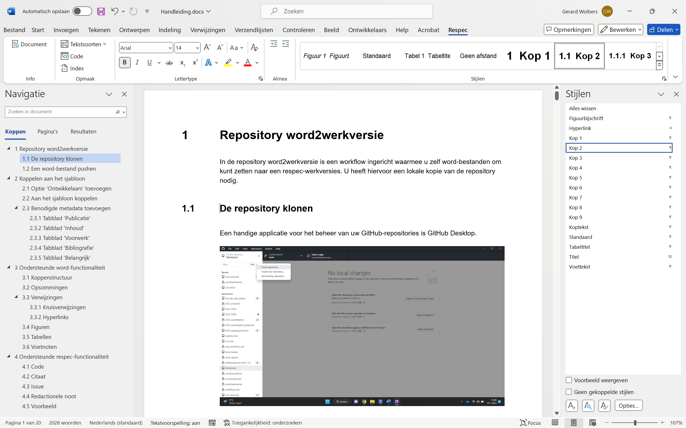
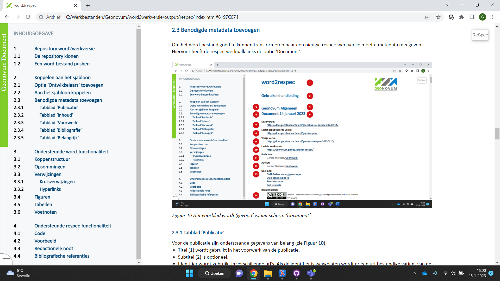

Het beheerportaal staat op https://beheer.geonovum.nl. Voordat u kunt inloggen is het nodig dat Geonovum een account aanmaakt.
Inlogscherm van het beheerportaal
Na inlog is er een overzicht van projecten.
Opbouw met een tegel-pagina
De workflows voor het publiceren van documenten staan onder tegel ‘Algemeen’. Voor deze handleiding gaan we uit van de workflow ‘Werkversie’.
Weergave van de algemene workflows
Opbouw van een workflow-pagina
De workflow-pagina bevat een link naar de repository ‘word2werkversie’. Hier kunt u het sjabloon respec.dotm downloaden.
Opbouw van een workflow-pagina
De algemene gedachte achter een workflow is: ‘Je hebt een input, daar doe je wat mee en dan krijg je een output’. Een workflow is in het beheerportaal net zo opgebouwd:
‘Input’: Dit blok bevat een inlog-mogelijkheid.
‘Stappen’: Dit blok bevat alle stappen in de workflow.
‘Output’: Dit blok bevat het resultaat van de workflow.
Na voltooiing van de upload kunt u de workflow starten. Alle stappen worden uitgevoerd. Een groen vinkje geeft aan dat de stap is voltooid, een rood kruis geeft aan dat er wat mis is. Door op het pijlpuntje te klikken, krijgt u meer informatie.
Stappen in de workflow word2werkversie
De workflow word2werkversie converteert een Word-bestand naar een ReSpec-werkversie en plaatst deze in een repository en maakt er een pages-versie van. Als bijproduct is het mogelijk om het resultaat te downloaden.
Output toont ook de inhoud van tekstdocumenten
Koppelen aan het sjabloon
Sjabloon respec.dotm downloaden
Een bestaand Word-bestand moet gekoppeld worden aan sjabloon respec.dotm. Hiervoor zijn in Word verschillende stappen nodig.
Voeg aan het menu optie ‘Ontwikkelaars’ toe. Dit is een eenmalige handeling.
Koppel het Word-bestand aan het sjabloon.
Vul alle benodigde metadata in.
Optie ‘Ontwikkelaars’ toevoegen
Standaard staat in Word de optie ‘Ontwikkelaars’ uit. Deze zet u aan bij menu-optie ‘Bestand’, ‘Opties’. Bij ‘Lint aanpassen’ vinkt u optie ‘Ontwikkelaars’ aan. Deze verschijnt dan in het menu.
Vink optie ‘Ontwikkelaars’ aan
Aan het sjabloon koppelen
Bij menu-optie ‘Onwikkelaars’ ziet u in de werkbalk rechts de optie ‘Documentsjabloon’. Als u deze selecteert, krijgt u het volgende scherm.
Scherm ‘Sjablonen en invoegtoepassingen’
Met ‘Bijvoegen’ selecteert u sjabloon respec.dotm in de map ‘input’ van uw lokale repository. Met de optie ‘Stijlen van het document automatisch bijwerken’ kunt u de stijlen in het document overschrijven door de stijlen in het sjabloon. Dit heeft voordelen omdat u daarmee automatische nummeringen in de koppenstructuur importeert, maar heeft als nadeel dat uw vormgeving waarschijnlijk wijzigt.
Nadat u het document heeft gekoppeld aan het sjabloon zijn er twee belangrijke aanpassingen:
Er verschijnt een nieuwe menu-optie ‘Respec’.
De optie ‘Plakken’ voegt alleen nog niet-opgemaakte Unicode-tekst toe. U kunt dit omzeilen met de optie ‘Plakken speciaal’ (Alt+Ctrl+V). Hiermee kunt u opgemaakte tekst toevoegen.
Benodigde metadata toevoegen
Om het Word-bestand goed te kunnen transformeren naar een nieuwe ReSpec-werkversie moet u metadata meegeven. Hiervoor heeft de respec-werkbalk links de optie ‘Document’.
Het voorblad wordt ‘gevoed’ vanuit scherm ‘Document’
Tabblad ‘Publicatie’
Voor de publicatie zijn onderstaande gegevens van belang (zie Figuur 9).
‘Titel’ (1) wordt gebruikt in het voorwerk van de publicatie.
‘Subtitel’ (2) is optioneel.
‘Omschrijving’ is optioneel maar wel belangrijk voor ‘Search Engine Optimization’ (SEO). Bij zoekmachines komt de omschrijving onder de zoekresultaten te staan. Het maximale aantal lettertekens is 150.
‘Identifier’ wordt gebruikt in verschillende url’s. Als de identifier is weggelaten wordt er een uri-bestendige variant van de titel als identifier gebruikt.
‘Domein’ verwijst naar het project. In dit geval is er geen domein. Het domein is heel belangrijk in de opbouw van de url’s.
‘Status’ (4) van het document geeft aan in welk stadium de publicatie is.
‘Type’ (5) geeft het type publicatie aan.
‘Licentie’ (14) geeft aan onder welke licentie het document wordt gepubliceerd.
‘Publicatiedatum’ (7) wordt gebruikt als versie-aanduiding in de url.
‘Voorgaande publicatiedatum’ (9) wordt gebruikt als versie-aanduiding in de url van de vorige versie. Als deze wordt weggelaten, dan wordt ‘Vorige versie’ niet getoond.
‘Status’ van de voorgaande publicatie wordt gebruikt om de url samen te stellen.
‘GitHub’ geeft aan of het blok ‘Doe mee’ (13) wordt getoond.
Tabblad ‘Publicatie’
Tabblad ‘Inhoud’
Respec heeft meer informatie nodig over de opbouw van de publicatie. Op basis hiervan verandert de werking. In het scherm worden alle hoofdstukken opgesomd. Voorwaarde is wel dat de koppenstructuur (zie 3.1) met stijl ‘Kop 1’ is aangegeven. Respec zet dit om naar html-secties. Van elke sectie kunnen we op het hoogste niveau het type en het soort informatie opgeven.
Het type sectie geeft aan of het voorwerk of een bijlage is. Bij optie ‘Voorwerk’ wordt het weggelaten uit de inhoudsopgave. De koppen krijgen in de publicatie geen nummering. Bij optie ‘Bijlage’ wordt de nummering met kapitale letters aangegeven.
Bij het soort informatie is er één optie ‘Informatief’. Als de optie wordt weggelaten, ziet ReSpec het als normatieve informatie. Als een sectie wordt gemarkeerd als informatief, dan wordt onder de kop de tekst ‘Dit onderdeel is niet normatief’ weergegeven. Daarnaast worden bibliografische verwijzingen (zie Figuur 23) aangegeven als ‘Informatieve referenties’.
Respec kan ook specifieke informatie toevoegen. U kunt deze aanvinken.
Tabblad ‘Inhoud’
Tabblad ‘Voorwerk’
Met dit tabblad worden de auteurs (12) en redacteuren (11) opgegeven. Zie ook Figuur 9 voor de nummering. Er is minimaal één redacteur nodig, auteurs zijn optioneel. U voegt een auteur of redacteur toe met optie ‘Nieuw’. Vul daarna naam, bedrijfsnaam en url van het bedrijf in. De url moet volledig zijn, dus inclusief ‘https://’. Als u een auteur of redacteur wilt verwijderen, selecteert u de desbetreffende naam en maakt u veld ‘Naam’ leeg.
Tabblad ‘Voorwerk’
Tabblad ‘Bibliografie’
Respec ondersteunt bibliografische referenties (zie 4.6). U kunt deze opgeven met tabblad ‘Bibliografie’. U voegt een publicatie toe met optie ‘Nieuw’. Vul daarna de onderstaande velden in. Alle velden zijn optioneel behalve veld ‘Titel’. Als u een publicatie wilt verwijderen, selecteert u de desbetreffende titel en maakt u veld ‘Titel’ leeg.
Tabblad ‘Bibliografie’
Het is wel belangrijk om de identifier op te nemen omdat hiermee in de tekst wordt verwezen naar de bibliografische bron (zie 4.6).
Tabblad ‘Belangrijk’
Dit tabblad is voor de workflow word2werkversie niet van belang. De workflow word2publicatie gebruikt het om de definitieve publicatie op de server docs.geostandaarden.nl te plaatsen. In andere gevallen wordt de test-omgeving test.docs.geostandaarden.nl gebruikt.
Tabblad ‘Belangrijk’
Ondersteunde Word-functionaliteit
Koppenstructuur
Alle transformaties in de word2respec-workflow zijn gebaseerd op het gebruik van de stijlen ‘Kop 1’ t/m ‘Kop 9’. Overigens biedt dit veel extra mogelijkheden binnen Word. Het venster ‘Stijlen’ opent (en sluit) u met toetscombinatie Alt+Ctrl-Shift+S.
Navigatie op basis van de koppenstructuur
Opsommingen
Er zijn twee typen opsommingen, genummerd en met tekens. Hiervoor dient u de Word-functie ‘Opsommingen’ te gebruiken. De opsommingen mogen gedefinieerd zijn in de stijl. De opsomming wordt omgezet naar opsommingen zoals ze voor het specifieke domein zijn gedefinieerd in het css-bestand. Dus het is mogelijk dat een opsomming met kapitale letters wordt omgezet naar Romeinse cijfers.
Verwijzingen
Omdat de koppenstructuur, figuurnummers en tabelnummers worden gegenereerd door ReSpec, is het niet verstandig om verwijzingen als tekst op te nemen. Dit kan op twee manieren:
met kruisverwijzingen,
met interne verwijzingen.
Kruisverwijzingen
Hiervoor gebruikt u de Word-functie ‘Kruisverwijzing’ (Alt+Ctrl+Shift+K). Hiermee kunt u verwijzen naar alle mogelijke genummerde alinea’s.
Scherm ‘Kruisverwijzing’Weergave van een kruiskoppeling in ReSpec
Hyperlinks
Ook hyperlinks worden doorgegeven in de ReSpec-weergave. Met scherm ‘Hyperlink invoegen’ (Ctrl+K) voegt u een hyperlink toe, bijvoorbeeld naar hoofdstuk Repository word2werkversie.
Scherm voor het invoegen en bewerken van hyperlinksWeergave van een hyperlink in ReSpec
Figuren
Het veiligst is om figuren met tekstomloop ‘In tekstregel’ te gebruiken. De transformatie moet namelijk weten waar in de tekst een figuur ‘verankerd’ is. Dit is in Word de standaard-mogelijkheid voor het plaatsen van figuren. De omvang van een figuur wordt berekend aan de hand van de breedte. De verhouding tussen de figuurbreedte en tekstbreedte wordt gebruikt in de uiteindelijke ReSpec-weergave. Als de figuurbreedte meer dan 90% van de tekstbreedte is, wordt het uitgevuld naar de volledige tekstbreedte.
Het is mogelijk om met kruisverwijzingen (zie 3.3.1) te verwijzen naar een figuur. De alinea onder de figuur wordt omgezet naar een figuurbijschrift als u het markeert met stijl ‘Figuurbijschrift’ of ‘Bijschrift’.
Tabellen
Tabellen worden volledig door de workflow word2respec ondersteund:
Tabelstijlen en tabeleigenschappen worden ondersteund.
De celopmaak wordt overgenomen.
Kolombreedte wordt overgenomen.
Samengevoegde cellen verticaal en horizontaal worden ondersteund.
Als u de alinea boven de tabel (zie Tabel 1) markeert met stijl ‘Tabeltitel’ of ‘Bijschrift’, dan wordt de alinea verwerkt als tabeltitel. In de tekst kunt u verwijzen naar de tabeltitel (zie 3.3.1). Merk op dat ReSpec in de weergave de tabeltitel niet weergeeft met een nummering. Onderstaand is een voorbeeldtekst.
Vergelijking met huidige rechtsfiguren en RO Standaarden
Onderwerp
Specificatie
Vergelijkbaar met / voortzetting van huidige rechtsfiguur
bestemmingsplan, uitwerkingsplan, wijzigingsplan en inpassingsplan op basis van Wro
beheersverordening op basis van Wro
bestemmingsplan met verbrede reikwijdte op basis van Crisis- en herstelwet
welstandsnota op basis van Woningwet
erfgoedverordening op basis van Monumentenwet
algemene plaatselijke verordening op basis van Gemeentewet
…
Voortzetting van instrument in RO Standaarden
Ja, bestemmingsplan en beheersverordening
INSPIRE-thema
Planned Land Use: SpatialPlan
Voetnoten
De transformatie ondersteunt niet-complexe voetnoten. Onderstaand is een voorbeeldtekst.
Op grond van artikel 20.26 lid 2 Omgevingswet worden besluiten en andere rechtsfiguren op grond van die wet die bij ministeriële regeling zijn aangeduid als omgevingsdocument, ontsloten via DSO-LV. De bedoelde ministeriële regeling is de Regeling standaarden publicaties Omgevingswet[1] De Regeling standaarden publicaties Omgevingswet is een ministeriële regeling bij de Bekendmakingswet . Deze regeling wijst besluiten en andere rechtsfiguren aan als omgevingsdocument en stelt het verplicht om die omgevingsdocumenten, en ontwerpen daarvan, elektronisch vorm te geven conform de Standaard voor Officiële Publicaties, het InformatieModel Omgevingswet en het voor het betreffende omgevingsdocument voorgeschreven toepassingsprofiel. Ook bevat deze regeling de verplichting om omgevingsdocumenten voor publicatie aan te bieden aan het Bronhouderkoppelvlak van de LVBB.
Respec-weergave van een voetnoot
Ondersteunde ReSpec-functionaliteit
In ReSpec-weergave komen tekstsoorten voor waarvoor we een specifieke Word-opmaak hebben afgesproken. U kunt deze toevoegen met de opties ‘Tekstsoorten’ en ‘Code’, links in de werkbalk.
Code
Een code-blok wordt in Word aangegeven door het hele blok te markeren met menu-optie ‘Code’. Onderstaand is voorbeeldtekst. Let erop dat de inspringing met een tab-teken moet.
Code kan ook binnen een alinea staan. Dan is het voldoende om dit gedeelte te markeren met optie ‘Code’.
Voorbeeld van een code-blok in Word
Citaat
Een citaat wordt aangegeven door de alinea te selecteren en optie ‘Tekstsoorten’, ‘Citaat’ te kiezen.
Dit is een voorbeeld van een citaat.
Weergave van tekstsoorten ‘Citaat’, ‘Issue’ en ‘Noot’ in Word
Issue
In ReSpec is het mogelijk om extra functionaliteit voor issues op te nemen. Zet in de eerste alinea het issue waarnaar gekoppeld moet worden en de titel. Selecteer de tekst en markeer het met ‘Teksoorten’, ‘Issue’.
Redactionele noot
Een redactionele noot wordt aangegeven door de alinea te markeren met menu-optie ‘Tekstsoorten’, ‘Noot’. Onderstaand is voorbeeldtekst.
Voorbeeld
Een voorbeeld wordt aangegeven door de alinea te selecteren en optie ‘tekstsoorten’, ‘Voorbeeld’ te kiezen. Het is mogelijk om een code-blok binnen een voorbeeld aan te geven. Onderstaand is voorbeeldtekst.
Voorbeeld van een voorbeeld in Word
Bibliografische referenties
Met menu-optie ‘Document’ tabblad ‘Bibliografie’ (zie 2.4.4) in de respec-werkbalk kunt u publicaties opgeven waarnaar u met een bibliografische referentie kunt verwijzen. Dit kan door de identifier van de publicatie tussen dubbele rechte haken te plaatsen: [[DONL]]. Respec voegt dan een bijlage toe met normatieve of informatieve referenties, afhankelijk van de opgegeven soort informatie (zie 2.4.2).
Bijlage met normatieve referentiesAls een referentie ontbreekt, geeft ReSpec een foutmelding
Index
De transformatie ondersteunt het toevoegen van een index (zie 2.4.2). Met behulp van menu-optie ‘Index’ kunt u begrippen opnemen die in het register worden opgenomen.
Weergave van een index-markering in WordRespec-weergave van de index